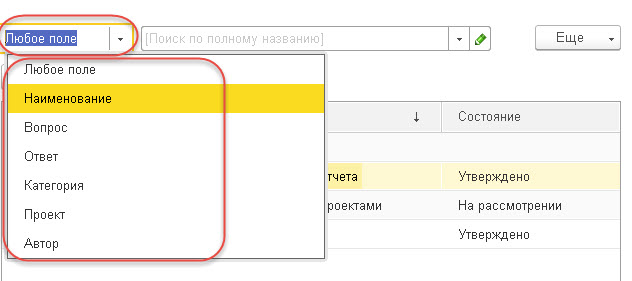

«Управление базой знаний» — это рабочее место для пользователя, который администрирует базу знаний.
Для возможности администрирования у пользователя должна быть задана роль «Администрирование базы знаний (CRM)» (раздел решения «Настройки», группа «Администрирование», пункт «Настройки пользователей и прав», гиперссылка «Профили групп доступа», группа «Дополнительные», пункт «Передача дел ответственному», закладка «Разрешенные действия (роли)»).
Эта роль также доступна пользователю, у которого заданы полные права (задана роль «Администрирование»).
При поиске решений в базе знаний, а также для ограничения количества найденных вариантов, в левой части формы базы знаний выбирается проект/процесс. В правой табличной части отобразится список имеющихся в системе решений по выбранному проекту/процессу. Например, можно выбрать процесс «Обучение сотрудников решению 1C:CM». В этом случае будут найдены решения, связанные с этим процессом.
Информация, содержащаяся в найденном решении, отображается в нижнем поле формы «База знаний».
Также для ограничения выводимых вариантов пользователь может настроить отборы и группировки. Варианты выбираются из списка, который открывается из меню кнопки над табличной частью решений (название кнопки меняется в зависимости от выбранной строки меню).
В верхней части формы расположены два поля полнотекстового поиска решения в базе знаний. В поле слева можно задать, в каких реквизитах базы знаний выполнять полнотекстовый поиск. Во втором поле указывается строка поиска.

В полях «Подразделение» и «Состояние» задаются дополнительные параметры для поиска решений в базе знаний.
Если по введенной в строку поиска комбинации символов в базе знаний ни одного решения не найдено, то под полем поиска будет отображаться гиперссылка «Ничего не найдено. Создать новое решение?». В этом случае пользователь может самостоятельно создать решение. Для этого надо нажать на данную гиперссылку.